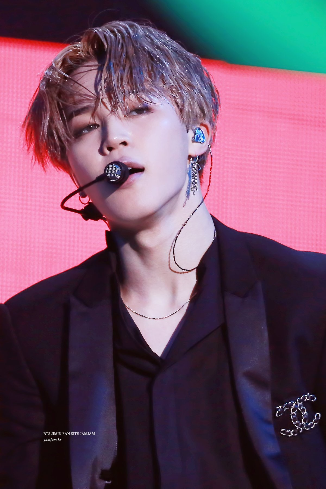
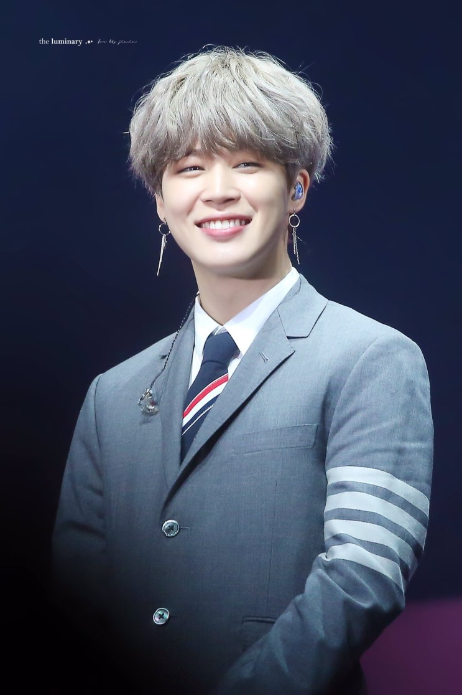

Park Ji-min (박 지민) is also known by his stage name Jimin. He is a member of BTS ( a.k.a Bulletproof Boy Scouts/Bangtan Sonyeondan/Beyond The Scene) under BigHit Entertainment and is the last member who joined the group
Jimin made his debut on June 13, 2013, as a member of BTS on Mnet's M! Countdown with the track "No More Dream" from their debut single album 2 Cool 4 Skool. Together with the members of BTS, he went on to win a series of awards and performed at several events such as the Mnet Asian Music Awards (MAMA), American Music Awards (AMAs) and Billboard Music Awards (BBMAs).
They are composed with 7 members.
He is truly a dancer.

